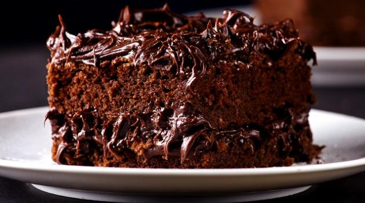

Culinária Feliz
Autor
Augusto Lobo
Data
31 de Setembro de 2018
Ingredientes
| Quantidade utilizada |
Ingrediente utilizado |
| 3 |
xícaras (430 g) de açucar |
| 1 2/3 |
xícaras (120g) de farinha de trigo |
| 4 |
xícaras (215 g) de chocolate em pó |
| Rende 2 Bolos |
Modo de Preparo
Ponha num liquidificador, jogue no prato e asse por 3 hora
Receita Finalizada
